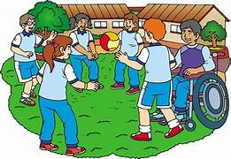

Cómo Mejorar la Inclusión Escolar

Existen varias estrategias que las escuelas pueden adoptar para mejorar la inclusión y garantizar que todos los estudiantes tengan la oportunidad de aprender y prosperar.
Propuestas
- Formación docente: Capacitar a los maestros en estrategias inclusivas y adaptaciones curriculares.
- Recursos adecuados: Proveer materiales y herramientas accesibles para estudiantes con discapacidades.
- Adaptaciones físicas: Modificar el espacio escolar para garantizar que todos los estudiantes, incluidos los que tienen discapacidades físicas, puedan participar plenamente.
“En el Distrito Escolar de XYZ, se implementó un programa de apoyo personalizado para estudiantes con discapacidades,
lo que resultó en un aumento del 40% en el rendimiento académico de los estudiantes con necesidades especiales.”